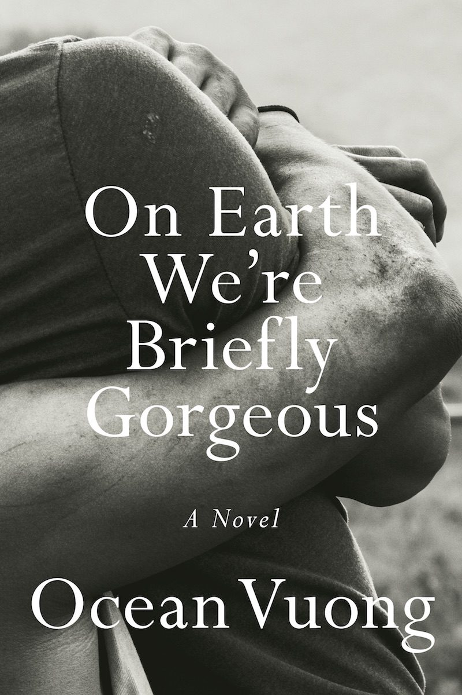
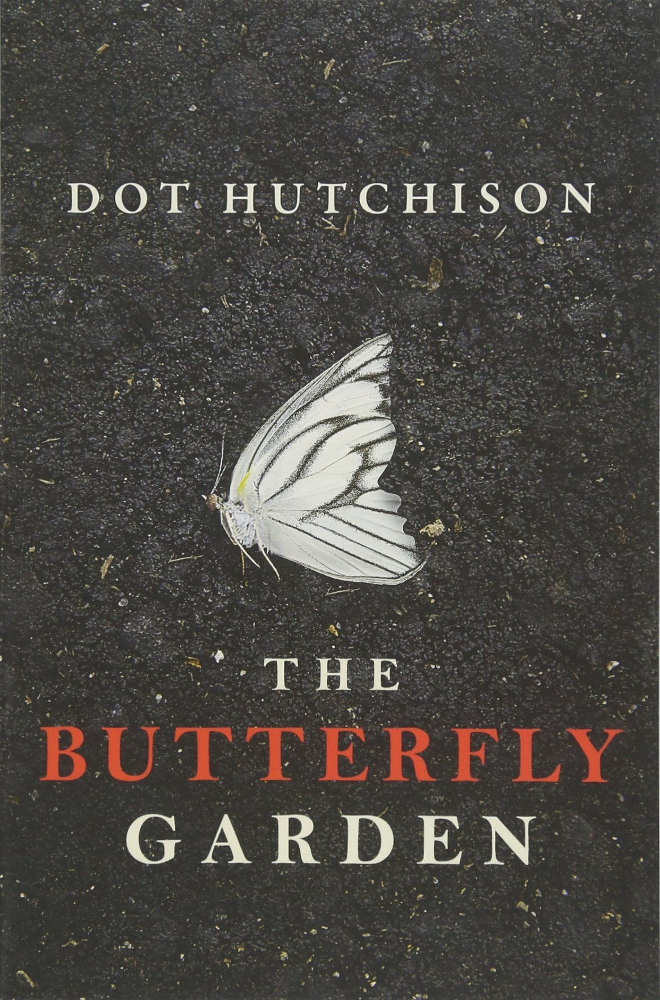
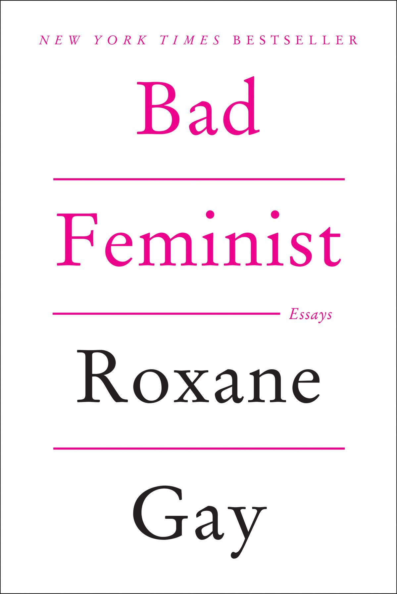

These are some books I have finished along with my personal opinions
and ratings.

On Earth We're Briefly Gorgeous
by Ocean Vuong
★★★★★
Finished:
Review: I really enjoyed this book because of the way
Ocean Vuong writes about
family, identity, love, and memory. The story is
written as a letter from a son, Little Dog, to his mother, which makes
the book feel very personal and emotional. Even though his mother
cannot read the letter, Little Dog uses it to reflect on his
childhood, his family, and the experiences that shaped him. I also
liked how the book explores the complicated relationship between
Little Dog and his family, especially his mother and
grandmother. Their experiences with war, immigration, trauma, and
poverty affect the way they communicate and show love to one another.
Sometimes their relationships are loving, but they can also be painful
and difficult. I thought this made the characters feel more realistic
because their relationships are not simple or perfect.
Another part of the book that interested me was Little Dog’s
experience growing up in the United States. He is
trying to understand where he belongs while also dealing with his
family’s past. He sometimes feels caught between different cultures
and different expectations. This made me think about how difficult it
can be for someone to create their own identity while also carrying
the history and experiences of their family. The book also explores
Little Dog’s romantic relationship with Trevor. Their
relationship shows both love and pain, and it becomes an important
part of Little Dog’s understanding of himself. I thought this part of
the story showed how relationships can help people learn more about
who they are, even when those relationships are complicated.
Something else I appreciated was how memory is used throughout the
book. Little Dog does not tell his story in a perfectly
organized way. Instead, his memories appear in different moments,
almost like he is remembering things as he writes the letter. I
thought this made the story feel realistic because people do not
always remember their lives in a perfect order. Some parts were
difficult and emotional, but Vuong’s poetic writing made the story
very memorable. I liked how he could describe painful experiences in a
beautiful and thoughtful way. At times, the writing felt almost like
poetry because of the way he described emotions, places, and memories.
The book also made me think about how
trauma can affect more than one generation. The experiences of
Little Dog’s mother and grandmother continue to affect the family even
years later. Their past influences the way they raise
Little Dog and the way they react to difficult situations.
This showed me how experiences from the past can continue to shape a
family in the present. Overall, I enjoyed On Earth We’re Briefly
Gorgeous because it was emotional, thoughtful, and different from many
other books I have read. It made me think about family, identity,
love, culture, and the way memories stay with us. Even though some
parts were painful to read, the writing made the story feel meaningful
and unforgettable.
Favorite Quote
"They say nothing lasts forever but they're just scared it will last
longer than they can love it."

The Butterfly Garden
by Dot Hutchison
★★★★☆
Finished:
Review: I found this book very interesting because of
its dark and suspenseful story. It follows a survivor
who explains what happened inside a place called
the Butterfly Garden, where young women are held captive by a
man known as the Gardener. The story is mainly told through an
interview, which slowly reveals what happened to the women and how
they survived inside the Garden.
The mystery kept me interested because information about the
characters, the Garden, and the narrator’s past is slowly revealed. I
wanted to keep reading because I was curious about what really
happened and whether the narrator was telling the investigators
everything she knew. The fact that the reader does not immediately
know the entire truth makes the story even more suspenseful. I also
thought the structure of the book was interesting. The story moves
between the present-day investigation and the survivor’s memories of
the Garden. This made the book feel like a mystery because new
information is revealed a little at a time. I liked trying to
understand what happened before the investigators discovered the
answers.
One of the strongest parts of the book was the
relationship between the women in the Garden. Even
though they were living in a frightening and dangerous situation, many
of them tried to support and protect each other. They created
their own type of community because they understood that they had to
depend on one another. I thought these relationships made the story
more emotional. The women were not just victims in the story. They had
different personalities, fears, strengths, and ways of dealing with
what was happening to them. Some tried to remain hopeful, while others
found different ways to survive emotionally.
The Gardener was also a disturbing character because he tried to
control everything about the women’s lives. The way he treated the
Garden as something beautiful made his actions even more disturbing.
There is a strong contrast between the beauty of the butterflies and
flowers and the terrible things that happen inside the Garden. The
butterfly imagery was one of the things I found most memorable. The
women are given butterfly tattoos, which makes them seem like part of
the Gardener’s collection. Butterflies usually represent beauty or
freedom, but in this story they are connected to
captivity and control. I thought that contrast made the title
of the book more meaningful.
I also liked how the narrator was written because she was not always
easy to understand. She sometimes seemed distant or secretive, which
made me question what she was thinking and whether she trusted the
investigators. This made me want to continue reading so I could learn
more about her past. Some parts of the story were disturbing and
uncomfortable to read because the book deals with violence, captivity,
and trauma. However, those darker parts also showed how serious the
experiences of the characters were. I think the book tries to show
both the cruelty of the situation and the strength of the women who
survived it.
Another theme I noticed was survival. Each character
reacts differently to fear and trauma, but many of them find ways to
keep going. The story made me think about
how people can adapt to terrible situations and how important
relationships can become when someone feels powerless. Overall, I
liked The Butterfly Garden because the mystery kept me interested from
the beginning to the end. The combination of suspense, secrets,
complicated characters, and the unusual setting made the book
memorable. Although some parts were difficult to read, I wanted to
keep reading because I wanted to understand what happened to the women
and learn the truth about the Garden.
Favorite Quote
"Some people stay broken. Some pick up the pieces and put them back
together with all the sharp edges showing."

Bad Feminist
by Roxane Gay
★★★★★
Finished:
Review: This is a great book that challenges the
reader to think about feminism in a more nuanced way.
Roxane Gay does a wonderful job of exploring the complexities of being
a woman in today's world.
One of the things I found most interesting about
Bad Feminist is how Roxane Gay explains that a person does
not have to be perfect to believe in feminism. She talks openly about
the contradictions in her own life and explains that she can support
feminist ideas while still enjoying things that may not always match
those beliefs. I liked this idea because it made feminism feel more
realistic and understandable. Sometimes people may think they have to
follow every rule perfectly in order to call themselves a feminist,
but Gay explains that people can have contradictions and still care
about equality. I think this makes the book easier for readers to
connect with.
The book is a collection of essays about feminism, race, gender,
culture, politics, books, movies, and everyday life. I liked that Gay
uses examples from popular culture and her own experiences to explain
larger social issues. This made some of the ideas easier to understand
because she connects them to things people see in movies, television,
music, books, and daily life. Another thing I liked was that the
essays did not all feel exactly the same. Some were serious and
emotional, while others included humor or personal observations. This
made the collection feel more interesting because Gay was able to talk
about difficult subjects in different ways.
The essays made me think about how
culture can influence the way people understand gender and
equality. Movies, music, television, and books can shape people's ideas about
what women and men are supposed to be like. Gay encourages the reader
to think more carefully about the messages that entertainment can
send. I also found it interesting how she discusses representation.
The way women and people from different backgrounds are shown in media
can affect how audiences understand them. If people are only shown in
stereotypes, those stereotypes can become accepted as normal. This
made me think more carefully about the characters and stories
that appear in popular culture.
Another important idea in the book is that feminism can be
complicated. Gay does not pretend that every feminist agrees about
everything. Instead, she shows that people can have different opinions
and experiences while still caring about gender equality.
I also liked that Gay includes personal experiences instead of only
discussing ideas in an academic way. Her personal stories make the
essays feel more honest and relatable. They show how larger social
issues can affect a person's everyday life. The book also made me
think about how race and gender can be connected. Gay discusses how
different parts of a person's identity can affect the way they
experience society. This helped me understand that discussions about
equality can become more complicated when different experiences and
identities are considered.
I thought the title Bad Feminist was interesting because Gay is not
saying that feminism is bad. Instead, she is recognizing that she does
not always behave like what some people might imagine a "perfect
feminist" should be. The title feels honest because she accepts her
own contradictions instead of pretending they do not exist. One of the
messages I took from the book is that
trying to support equality is more important than trying to be
perfect. People can make mistakes, question their beliefs, and continue
learning. I liked this message because it makes feminism feel like
something people can continue to understand and improve on over time.
The book also encouraged me to think more critically about things I
normally watch or read for entertainment. Something can be enjoyable
while still containing ideas or messages that deserve criticism. Gay
shows that it is possible to like something while also recognizing its
problems. Overall, I enjoyed Bad Feminist because it presented
feminism in a personal, honest, and realistic way. The essays
encouraged me to think more about gender, culture, media, race, and
equality. I especially liked the idea that a person does not have to
be perfect to care about important issues. Instead, people can
continue learning, questioning themselves, and trying to understand
different perspectives.
Favorite Quote
"I believe feminism is grounded in supporting the choices of women
even if we wouldn’t make certain choices for ourselves."